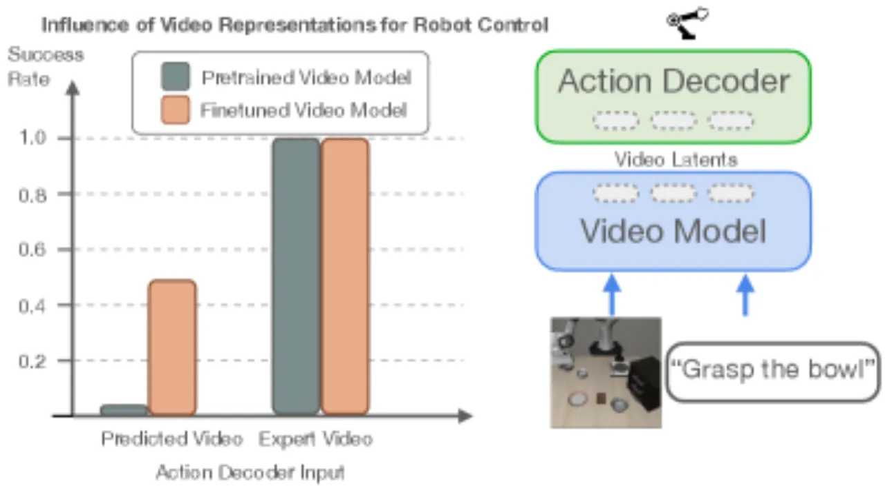
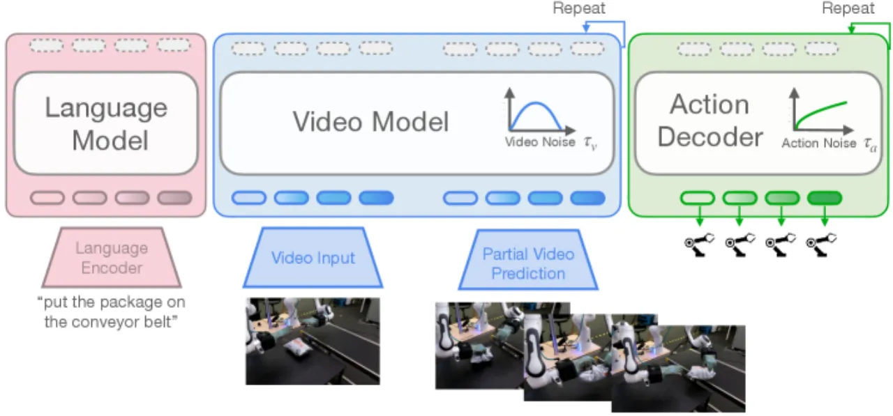
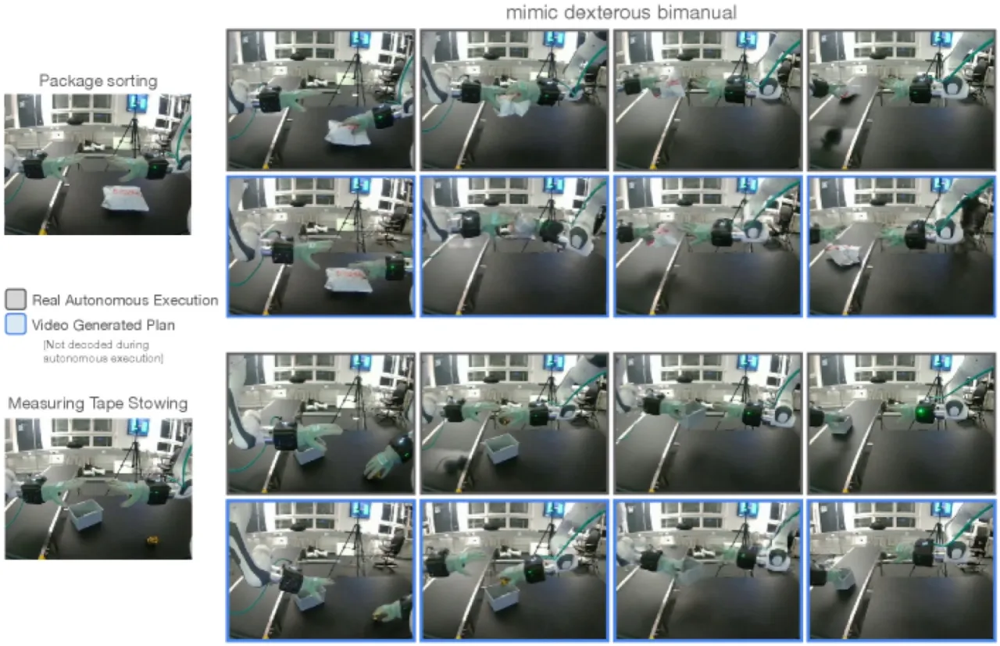
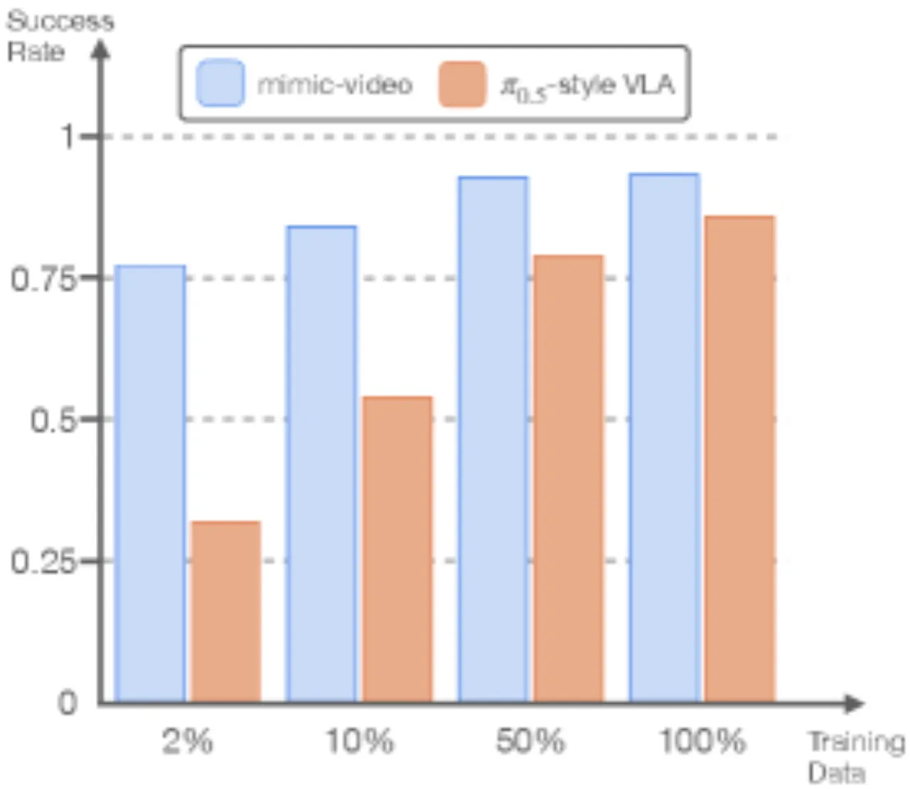
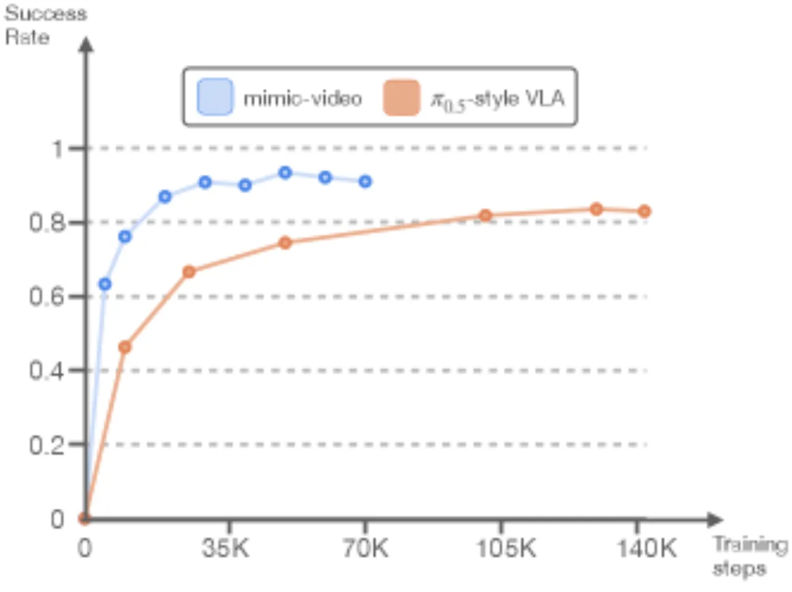
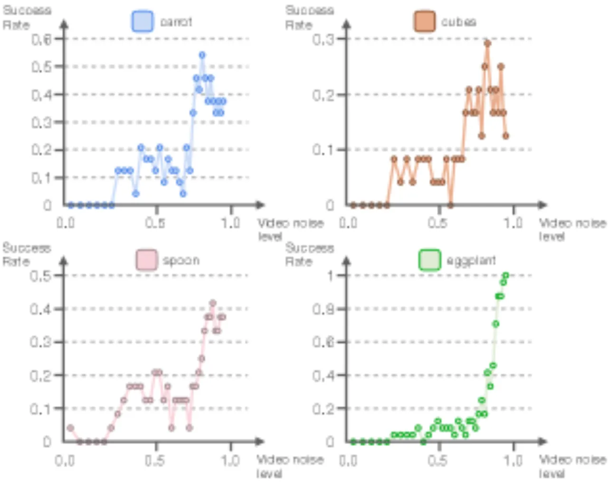

VLA（Vision-Language-Action）模型的预训练数据本质上是静态的，缺乏对物理动态的理解。 mimic-video 提出了一种新范式——Video-Action Model（VAM）：将大规模预训练视频模型（Cosmos-Predict2, 2B参数） 与轻量级 flow-matching 动作解码器配对，后者充当逆动力学模型（Inverse Dynamics Model）， 在仿真和真实机器人操作任务上实现了最先进的性能，样本效率提升 10×，收敛速度提升 2×。
当前主流 VLA 模型将视觉-语言预训练迁移到机器人控制，但其预训练数据（互联网图文） 本质上是静态的，无法捕捉物理世界的时序动态。这意味着机器人的物理理解能力必须完全从 稀缺且昂贵的机器人演示数据中从头学习。
"the pretraining data, while massive in scale, is inherently static." — 作者的核心出发点：用视频模型天然编码的时序动态替代静态视觉-语言预训练。

mimic-video 将两个 Conditional Flow Matching（CFM）模型耦合：一个冻结的预训练视频骨干 （Cosmos-Predict2，经过 LoRA 微调）负责建模视觉时序动态；一个轻量级 DiT-based 动作解码器 从视频骨干提取的中间表示中预测机器人动作。两者在各自独立的 flow 时间调度（τᵥ 和 τₐ）下运行。

与直觉相反，作者发现最优性能出现在最高噪声水平（τᵥ ≈ 1）， 而非完整视频重建（τᵥ = 0）。原因在于：
系统采用最优传输路径在干净数据与高斯噪声之间插值： xᵗ = (1−τ)x⁰ + τε，τ ∈ [0,1]。 模型学习向量场 vθ 以回归条件生成场。 动作解码器为 DiT-based 架构，具备： cross-attention（对接视频隐状态）、self-attention（跨动作序列）、 AdaLN 调制（融合 τᵥ 和 τₐ），以及本体感知状态编码（训练时使用 learned mask tokens）。
在机器人视频数据集上对 Cosmos-Predict2 进行 LoRA 微调，学习机器人操作场景的时序动态。骨干在 Stage 2 中冻结。
从头训练轻量级 DiT 动作解码器，以冻结视频骨干的中间隐状态为条件，学习动作预测。 流程解耦使动作数据需求极低。
评估覆盖三个设置：SIMPLER-Bridge 仿真基准（跨任务泛化）、LIBERO 仿真基准（语言条件操作）、 以及真实双臂灵巧操作（Franka 机械臂 + 16-DoF 灵巧手）。基线包括 OpenVLA、Octo、 FLOWER、Diffusion Policy、OpenVLA-OFT 及论文自行实现的 π₀.₅-style VLA。
| 模型 | Put Carrot | Spoon | Blocks | Eggplant | 平均 |
|---|---|---|---|---|---|
| OpenVLA (finetuned) | 4.2% | 8.3% | 0.0% | 45.8% | 14.6% |
| Octo (finetuned) | 8.3% | 12.5% | 0.0% | 43.1% | 16.0% |
| FLOWER (finetuned) | 13.0% | 71.0% | 8.0% | 88.0% | 45.0% |
| π₀.₅-style VLA (scratch) | 25.0% | 29.2% | 20.8% | 66.7% | 35.4% |
| mimic-video (scratch) | 37.5% | 37.5% | 12.5% | 100.0% | 46.9% |
| mimic-video (per-task τᵥ) | 54.2% | 41.7% | 29.2% | 100.0% | 56.3% |
| 模型 | Spatial | Object | Goal | 平均 |
|---|---|---|---|---|
| Diffusion Policy | 78.3% | 92.5% | 68.3% | 79.7% |
| Octo (finetuned) | 78.9% | 85.7% | 84.6% | 83.1% |
| OpenVLA (finetuned) | 84.7% | 88.4% | 79.2% | 84.1% |
| OpenVLA-OFT (finetuned) | 96.2% | 98.3% | 96.2% | 96.9% |
| π₀.₅-style VLA (scratch) | 79.2% | 94.0% | 84.4% | 85.9% |
| mimic-video (scratch) | 94.2% | 96.8% | 90.6% | 93.9% |
| 模型 | Packing (sorting) | Package Handover |
|---|---|---|
| DiT-Block Policy | 11.0% | 30.0% |
| DiT-Block + wrist cameras | 42.6% | 74.1% |
| mimic-video | 72.0% | 93.0% |
注：mimic-video 仅使用单一工作空间视角，且仅用 1h 33m（512 episodes）sorting 数据和 2h 14m（480 episodes）stowing 数据训练， 即超越使用腕部相机的多视角基线。




其他关键消融发现：
• 最优视频源层： 第 k=19 层性能最强，"decreasing success rates towards initial or final layers"。
• 观察帧数： 五帧历史优于单帧条件。
• VLA baseline 层选择： FAST 预训练 VLM 的第 11 层 cross-attention 在 SIMPLER-Bridge 上表现最优。
当前方法依赖"single-view video backbone, which restricts policies to a fixed, single workspace view"。 尽管这一限制使 mimic-video 在无需额外视角的情况下超越了多视角基线， 但也限制了其在需要动态视角或无固定工作空间环境中的适用性。
作者明确指出尚未将 VAM 范式应用于统一的大规模跨实体模型： "not yet applied the VAM recipe to train a unified, large-scale, cross-embodiment model"。 目前的实验仅在特定机械臂平台上验证。
真实机器人实验集中于少量精心设计的任务："current real-world experiments are limited to a focused set of tasks"。 更广泛的任务多样性、非结构化场景及长时序操控的泛化性尚待验证。